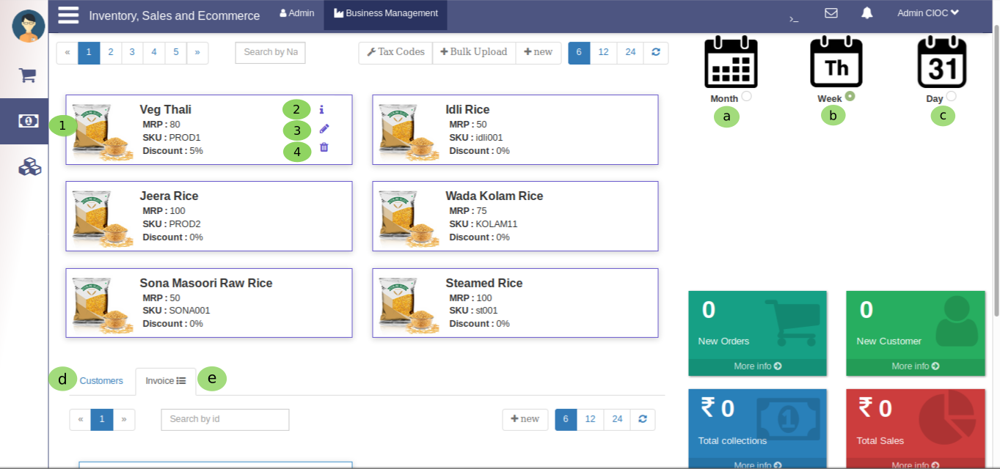
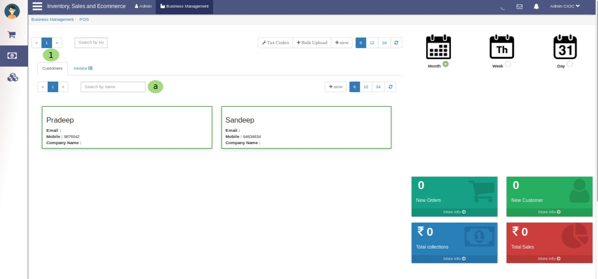

Business Management Point Of Sale¶

Fig. 35 POS (Point of sale)
You clicked on pos so you are here now,
- It has taken you to POS (point of sale) portal which is subportal of Business Management. Now its time to know POS in detail.
- Here you can check you point of sale as per Month . You can check prticular months pos just select the month data will display on same tab.
- Here is same feature for Week too.
- In the same way you can check pos for Day.
- Here admin can search Customer by their Name.

Fig. 36 Customers
Above image is example of search Customer by Name.
- Here admin can search Invoice by their Id.

Fig. 37 Invoices
Above image is example of search Invoice by Id.
- Clicking on it will show you the Product details.
- Click here to edit the product it will show you details of that product which will reflect in Manufacture section. Here you can change the product details and quantity as per your requirements. It is similar to Edit Product so just try once you will come to know how it works.